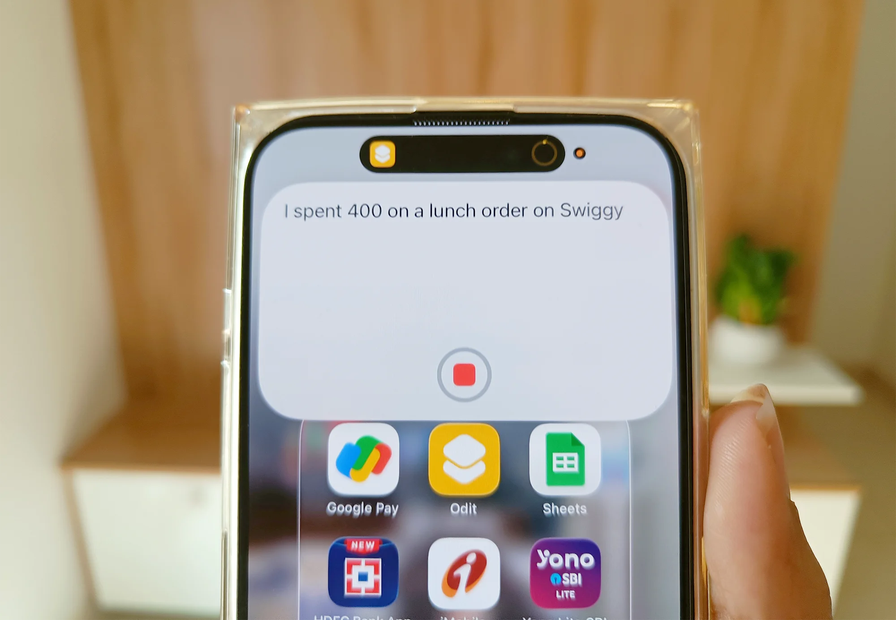
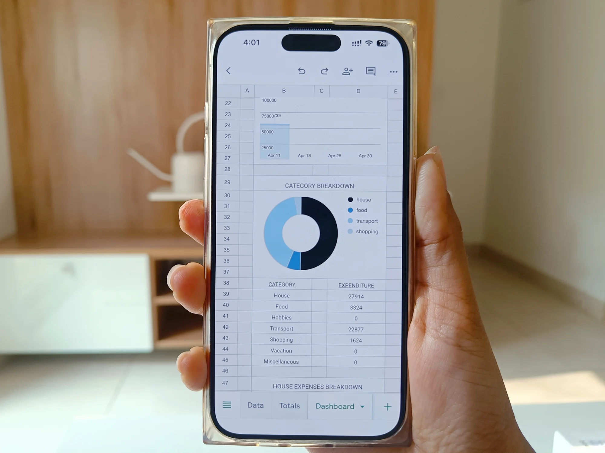

[ ODIT ]
MEET MY EXPENSE TRACKER THAT TAKES ISSUE WITH MY EXPENSES
Apple Shortcuts / Node.js / Gemini API / Google Sheets / Google Sheets API / Resend / Vercel Built in 2026

Let me explain
I built a voice-interface system using Apple Shortcuts. I can just say something like “I spent 400 on lunch,” and that speech input goes through my Node.js API running on Vercel. It is sent to Gemini, which classifies the expense into a category and subcategory based on a taxonomy that I’ve predefined because I want my expenses to be categorized in a particular way that would help generate insights that are relevant for me.
Once that’s done, the expense gets logged into Google Sheets, which acts as both the database and the analytics layer. I’ve set up a separate sheet to compute totals, and another one that functions as a full dashboard with metrics and visualizations.
After logging the expense, I pass the updated totals back into Gemini again — but this time to generate a response. That’s where the personality comes in. It gives me a short and sarcastic remark based on my spending patterns, which is then read out loud through text-to-speech on the Apple shortcut.
There’s also an approval flow, where I can ask if I should spend money on something, and it gives me a judgmental yes or no based on my current financial state.
And finally, there’s a weekly summary that gets sent to my email, highlighting patterns in my spending along with an observation, a verdict, and a piece of advice.
The whole system is lightweight, but it brings together voice interaction, AI decision-making, and structured data tracking in a way that feels a lot more personal than a typical expense tracker.
It started as a small idea, but it ended up becoming a full system that I actually use day to day.


 Github repo
Github repo